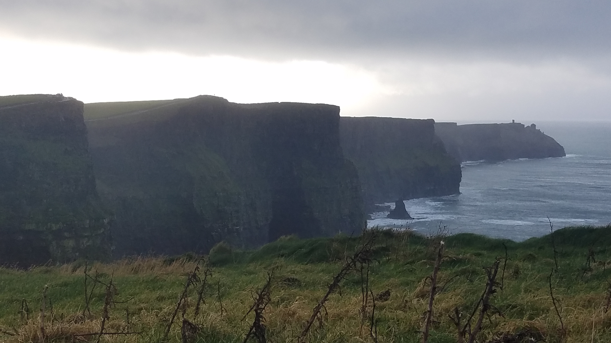
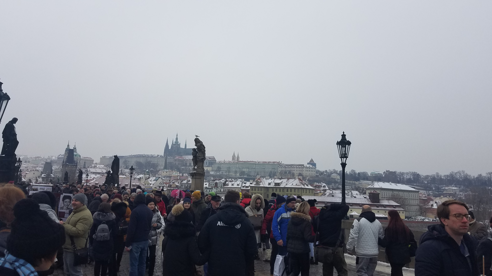
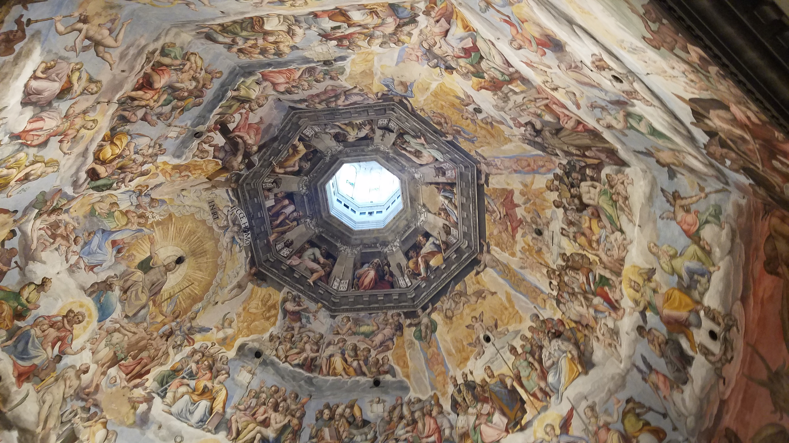

Ben Alston - Spain
Contacting Me:
- During this time, I will not use my American phone number. Please use email to contact me.
San Sebastian
San Sebastian is a coastal city along the bay of Biscay. The best views are from the top of Monte Igueldo to the west.

Dublin and the Cliffs of Moher
Spent a weekend in Dublin. Friday, I took a long bus ride across the island to the Cliffs of Moher. On Saturday, I did a walking tour of the city and then spent the rest of the day with a few of the people I met on the tour.
Prague
I spent the first weekend of December in Prague. I tested my Spanish skills by doing a tour of the castle in Spanish. It snowed while I was there and it made the christmas market even more beautiful.
Florence
The weekend before finals I decided to go to Florence. I spent the whole weekend going to art museaums and shopping at the leather markets. I ate dinner at a restaurant recommended to me by an Italian friend.
